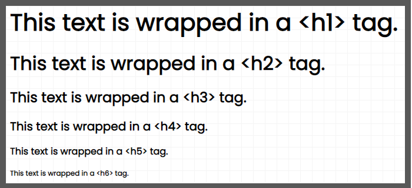
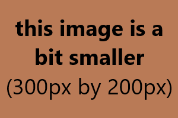

{Template Post Title}
{Template Post Date}Read the two example posts below for more thorough details, and see the HTML comment here for a general example.
Read the two example posts below for more thorough details, and see the HTML comment here for a general example.
Hello! This is the new blog page design. All blog posts are on this one page, as opposed to each post having a separate page.
The HTML of this page is relatively simple. The <body> tag of this page is laid out as follows:
<!-- Blog Page <body> tag's HTML Layout -->
<body>
<header>...</header>
<main id="blog">
<div class="wrapper">
<article>...</article> <!-- Blog Post -->
<article>...</article> <!-- Blog Post -->
...
<article>...</article> <!-- Blog Post -->
</div>
</main>
<footer>...</footer>
</body>
Within the <main id="blog"> tag, you will notice a <div class="wrapper"> tag. This tag is used to center the page content on the screen with a maximum width set in the CSS. It also adds white space between each blog post entry. Technically, this tag is optional. However, it makes the layout look polished.
Each Blog Post on the Blog page is contained within an <article> element. These article elements are laid out as follows:
<!-- Blog Page <article> tag's HTML Layout -->
<article>
<div class="article-text">
<section class="article-overview">...</section>
... <!-- actual blog post content goes here -->
</div>
<aside>...</aside>
</article>
The article has a <div class="article-text"> and an optional <aside> sidebar element as direct children. Each article can have its own sidebar, as opposed to 1 page-wide sidebar. The sidebar lies below its article on mobile screens, and to the right on desktop. Excluding the sidebar just leaves that space empty on desktop screens, with no noticeable effect on mobile.
Apart from the tags you will use to create your blog posts, the <div class="article-text"> tag has one direct child tag: <section class="article-overview">, which is laid out as follows;
<!-- Blog Page <section class="article-overview"> tag's HTML Layout -->
<section class="article-overview">
<span id="{YYYYMMDD-blog_post_title}" class="article-anchor"><span>
<h2>{Blog Post Title}</h2>
<span class="article-date">{Blog Post Date}<span">
</section>
Within the <section class="article-overview"> are the three following child tags:
After the article overview, you can add whatever combination of tags you need to create your blog post. This is pretty bare bones, so if anything ends up not being accounted for, let me know. The next article will discuss a few different supported tags.
All tags that are direct children of the blog post's <div class="article-text"> tag have added space between them to space out the content.
This text is wrapped in a <p> "paragraph" tag, which keeps all default CSS styles.
This text is wrapped in a <span> tag, which has no semantic meaning. This text is wrapped in a <b> "bold" tag. This text is wrapped in a <strong> "strong" tag. This text is wrapped in a <i> "italic" tag. This text is wrapped in a <em> "emphasis" tag.Ordered Lists and Unordered Lists are set to be slightly indented relative to the rest of the text, with some space between each List Entry. For example:
As demonstrated in this article, you can add code snippets to your blog posts using the <code> tag. If you've looked at the HTML, you'll notice that the text within this tag must be completely unindented relative to the rest of the HTML. This is because the code tag is set to respect exact indentation and line breaks within the CSS. Thus, if you indent the text within this tag to align with the rest of your HTML, it will show those indentations in the code snippet shown to the user.
The headings' font size is slightly increased from its default values in the CSS. In order to not break the semantic meaning of the page by placing an <h1> tag in the middle of the page and an <h2> tag in the middle of an article, here is a photo of the different heading sizes relative to one another:
By default, images will take on their actual file width. However, if they are too large, they will simply scale down to 100% width of the article.

The image above will likely fill the entire screen width on mobile devices, and have white space on either side for desktop devices.
The image above shows how smaller images will still center themselves, but will only ever be as large as their actual file size.
As shown above, you can also use an HTML <figure> tag with <img> and <figcaption> tags as direct children to have an image with italicized text below it. This is great if you'd like to add a graph image with explanation text below it, but can be used with any image you'd like to add a caption to.